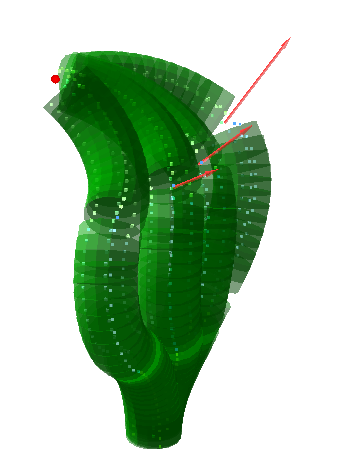
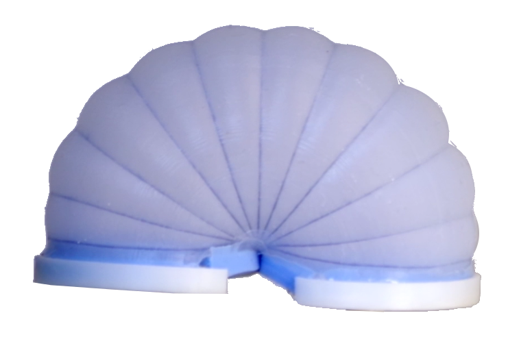

Publications and patents
Publications
 New STIFF-FLOP module construction idea for improved actuation and sensing,
New STIFF-FLOP module construction idea for improved actuation and sensing,
J Fras, J Czarnowski, M Macias, J Glowka, M Cianchetti, A Menciassi
 download accepted version
download accepted version

Static modeling of multisection soft continuum manipulator for stiff-flop project
J Fras, J Czarnowski, M Macias, J Glowka
download accepted verison
Total mesorectal excision using a soft and flexible robotic arm: a feasibility study in cadaver models
A Arezzo, Y Mintz, ME Allaix, S Arolfo, M Bonino, G Gerboni, ...
Multi-Axis force/torque sensor based on Simply-Supported beam and optoelectronics
Y Noh, J Bimbo, S Sareh, H Wurdemann, J Fras, DS Chathuranga, H Liu, ...
 Soft Flexible Gripper Design, Characterization and Application
Soft Flexible Gripper Design, Characterization and Application
J Fras, M Macias, F Czubaczynski, P Salek, J Glowka
download accepted version
Visual Marker Based Shape Recognition System for Continuum Manipulators
J Fras, S Tabaka, J Czarnowski
download accepted version

Soft fluidic rotary actuator with improved actuation properties
J Fras, Y Noh, HA Wurdemann, K Althoefer
download accepted version
Depth-Map-Based Shape Recognition of Soft Continuum Manipulator Body
J Fras
download accepted version
Total Mesorectal Excision using a soft and flexible robotic arm: a feasibility study in cadaver models.
G Gerboni, M Brancadoro, M Cianchetti, A Menciassi, H Wurdemann, ...
Contact force sensor for flexible manipulators for MIS (minimally invasive surgery)
P Gawenda, Y Noh, J Fras, S Han, S Wang, R Housden, K Althoefer, ...
An intelligent data fusion system concept for the STIFF-FLOP project
J Czarnowski, J Fras, J Glowka, M Macias, A Woloszczuk, P Salek
Highly dexterous 2-module soft robot for intra-organ navigation in minimally invasive surgery
Haider Abidi, Giada Gerboni, Margherita Brancadoro, Jan Fras, ...
Patents
Granted
- Soft manipulator, PL409670
J Fras, J Czarnowski, J Glowka, M Macias - Soft manipulator module, PL411429
J Fras, J Czarnowski, J Glowka, M Macias